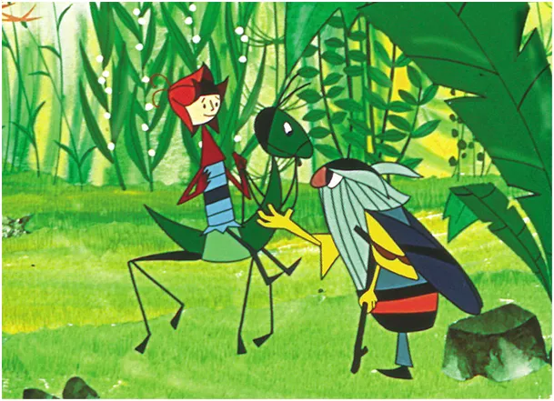
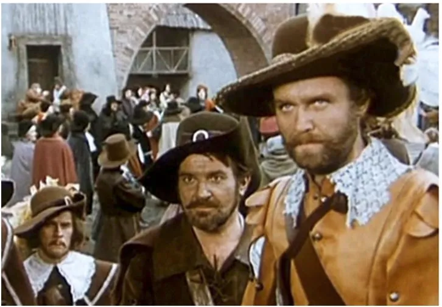
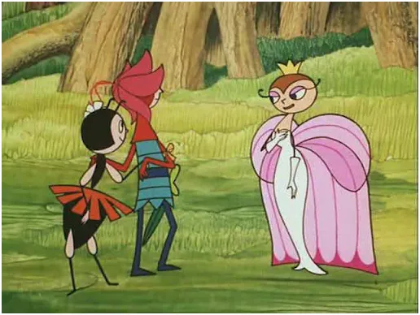

Kocham kino
Film "Czarne chmury" z 1973 r. to relikt minionej epoki, gdy ludzie mieli za dużo czasu a filmowcy za mało pieniędzy i rozciągali sceny w nieskończoność, co dawało efekt tasiemca w oleju.

Był to też film dla dorosłych, gdzie "komuna" pozwalała sobie łamać obyczajowe tabu, tym bardziej, że na ekranie balangowała szlachta, a wiadomo, że szlachta to istniała tylko po to, by "dziewki psuć po dworach."

Dla wszystkich, którzy znają "Czarne chmury" z 1973 r.i nie są w stanie bez przewijania obejrzeć tego tasiemca, mam 10 minutowy, ekspresowy produkt zastępczy, jaki stworzyła 4 światowa potęga gospodarcza w latach w latach 1963−1965: "Przygody Błękitnego Rycerzyka". Po stanie wojennym powstała jeszcze wersja kinowa. Łza się w oku kręci, gdy dociera do naszej świadomości smutna prawda, że od dekad w 3. RP, poza orłem z czekolady w pałacu prezydenckim, nie powstał żaden pozytywny film dla dzieci.
W drugim linku na dole bardzo na serio tekst o tym, dlaczego nie nosimy kotylionów, jako symbolu zbrodni. Zapraszam!
"Przygody Błękitnego Rycerzyka."
„Wolność, równość, braterstwo albo śmierć” ? https://pawelklimczewski.pl/2024/11/10/11-listopada-skad-tu-haslo-wolnosc-rownosc-braterstwo-albo-smierc/
Paweł Klimczewski